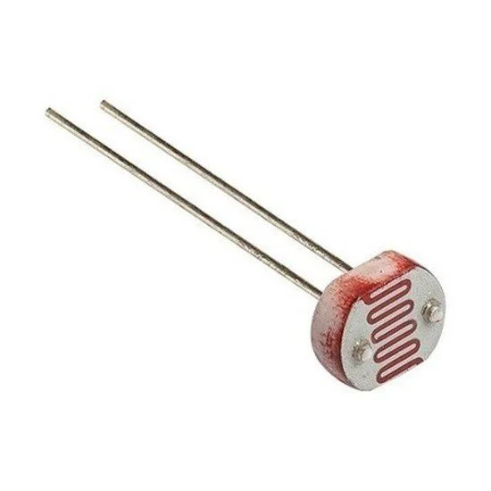

LDR
Descrição (conceito)
Um LDR, ou Resistor Dependente de Luz, é um tipo de resistor cuja resistência varia em função da intensidade da luz que incide sobre ele. Em ambientes iluminados, a resistência do LDR diminui, permitindo que mais corrente elétrica passe. Em ambientes escuros, sua resistência aumenta, reduzindo a corrente. Esse componente é amplamente utilizado em circuitos eletrônicos e sistemas de automação, como controles de iluminação, alarmes e dispositivos que detectam mudanças na luz.
Fonte: Eletrogate
Como o LDR pode ser usado como sensor de luz
Iluminação Automática: Em sistemas de iluminação, o LDR pode ser utilizado para acionar luzes automaticamente ao anoitecer ou ao amanhecer. Quando a luz ambiente diminui, a resistência do LDR aumenta, ativando um circuito que liga as luzes.
Alarmes de Segurança: Em sistemas de alarme, o LDR pode detectar mudanças na iluminação de uma área. Se uma luz inesperada (como uma lanterna) for detectada, o alarme pode ser acionado.
Controle de Ventilação: Em estufas ou aquários, o LDR pode ajudar a regular a iluminação e a ventilação, garantindo condições ideais para plantas ou animais, ligando ou desligando ventiladores e lâmpadas conforme a luz ambiente.
Câmeras Automáticas: Em câmeras, o LDR pode ajustar automaticamente a exposição, garantindo que as imagens sejam capturadas com a melhor iluminação possível.
Quais as principais aplicações e usos do LDR no controle de iluminação
Luzes Automáticas de Rua: LDRs são usados em sistemas de iluminação pública para acender e apagar lâmpadas automaticamente ao anoitecer e ao amanhecer, economizando energia.
Iluminação de Jardins: Sensores LDR podem ativar luzes de jardim em resposta à queda da luz natural, proporcionando segurança e estética.
Controles de Cortinas ou Persianas: Em sistemas automatizados, o LDR pode ser utilizado para ajustar a posição de cortinas ou persianas com base na luminosidade externa, regulando a entrada de luz natural.
Luz Noturna Automática: Em residências, o LDR pode ser integrado a lâmpadas que se acendem automaticamente quando o ambiente fica escuro, proporcionando segurança durante a noite.
Iluminação de Sensores de Movimento: Em combinação com LDRs, sistemas de movimento podem ser configurados para acender luzes somente em condições de baixa luminosidade, aumentando a eficiência energética.
Sistemas de Iluminação Inteligente: Em casas inteligentes, LDRs podem ser usados para monitorar a luz ambiente e ajustar automaticamente a intensidade das lâmpadas, garantindo conforto e economia de energia.
Iluminação de Emergência: LDRs podem acionar luzes de emergência em situações de baixa luminosidade, como apagões, ajudando na evacuação segura de áreas.